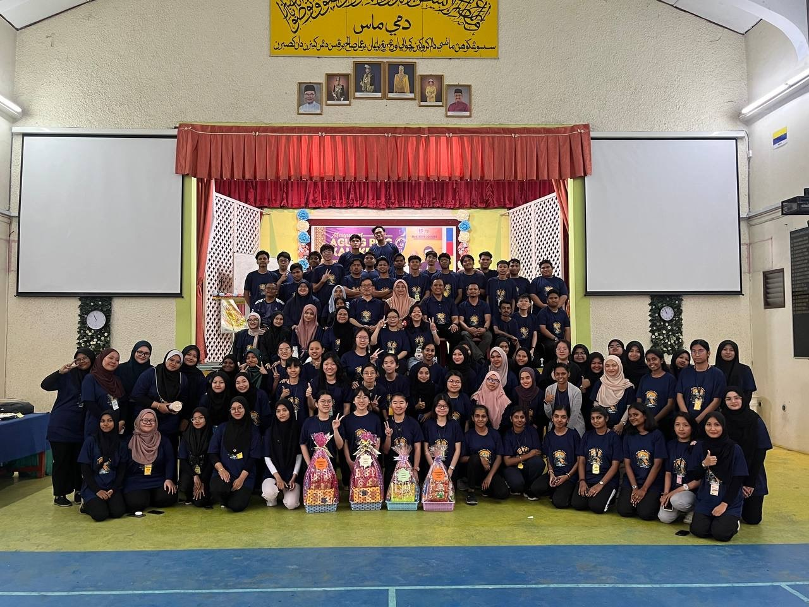

My STPM journey was one of the most challenging yet rewarding experiences in my life. During this period, I learned to become more independent, disciplined, and hardworking. I faced many academic challenges, but they helped me develop critical thinking and problem-solving skills. I also built meaningful friendships and created unforgettable memories throughout my studies.
These videos capture some of my favourite moments during my STPM years. I cherish every moments that I had at STPM.